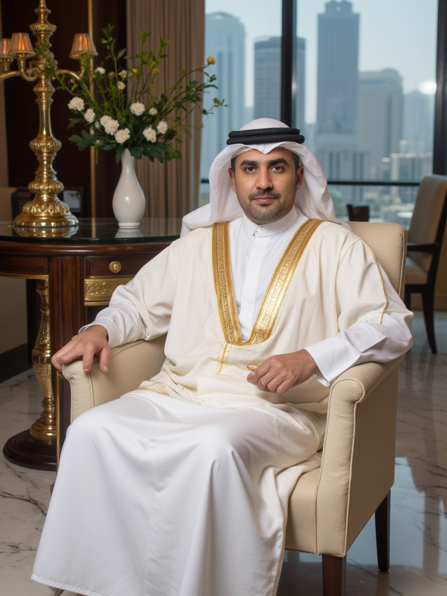

Quem Somos
A Vholin + Habba é uma loja online de produtos importados, oferecendo uma variedade de itens cuidadosamente selecionados para atender às suas necessidades. Fundada por dois empresários visionários, Sr. Vholin Pinbhar, um sheik árabe de grande renome, e Sr. Habba Ghandi, um influente empresário indiano, a loja combina experiência internacional e expertise em e-commerce para oferecer o melhor em produtos de qualidade.
Nossos produtos são importados diretamente de diversos países e oferecidos de forma exclusiva através de nossa plataforma online. Buscamos proporcionar uma experiência de compra única, com um catálogo diversificado e excelente atendimento ao cliente.
Os Fundadores
Sr. Vholin Pinbhar
O Sr. Vholin Pinbhar é um empresário renomado no mundo árabe, com uma longa trajetória no setor de investimentos e comércio internacional. Com formação em Economia pela Universidade de Dubai e um MBA em Gestão de Negócios Globais pela Universidade de Harvard, ele é conhecido por sua habilidade em identificar tendências de mercado e gerar grandes retornos em seus negócios.
Sr. Habba Ghandi
Sr. Habba Ghandi é um empresário indiano de sucesso, especializado em comércio internacional e e-commerce. Graduado em Administração de Empresas pela Universidade de Mumbai, com uma especialização em Comércio Exterior, Habba tem se destacado por sua visão estratégica e seu compromisso com a inovação. Ele é um líder de pensamento no setor de tecnologia e comércio digital.
Nosso Compromisso
Na Vholin + Habba, nosso compromisso é com a qualidade, a diversidade e a satisfação do cliente. Trabalhamos incansavelmente para trazer os melhores produtos de diversos mercados ao redor do mundo e oferecemos uma experiência de compra online fácil e segura.